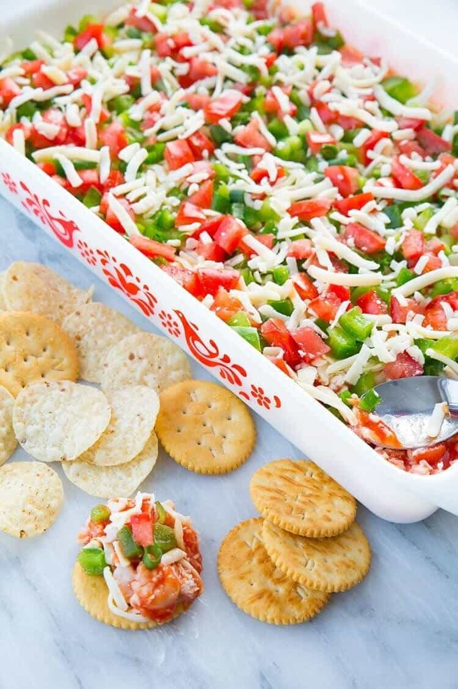

Dip

Delicious dip for your parties and your family gatherings
This dip contains cream cheese, shrimp, tomatoes, green pepper and more. It is really versatile and for all occasions.
Ingredients
- 8 oz Philadelphia cheese
- 1/2 cup Sour cream
- 1/4 cup Mayo
- 8 oz Small shrimp
- 1 cup Cocktail sauce (Golden Dip original)
- 2 cup Grated Mozarella cheese
- 1 Diced green pepper
- 3-4 Green onions
- 1 Diced tomato
- 1 Bag of Nachos or Crackers
Steps
- Mix Philadelphia cheese, sour cream and mayo together. Spread at the bottom of a 12 in dish.
- Add Cocktail sauce.
- Add Shrimps
- Add mozarella cheese
- Add Green pepper
- Add Green onions
- Add Tomatoes
- Eat with Nachos or Crackers